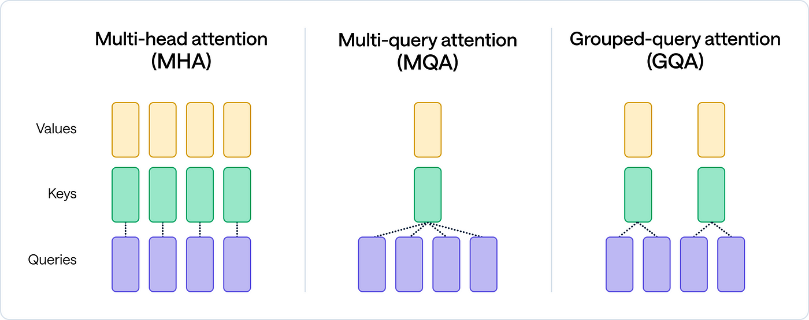
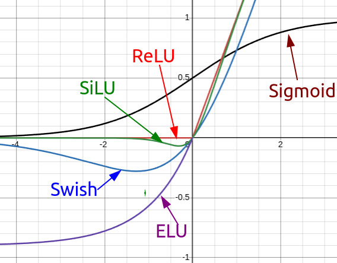
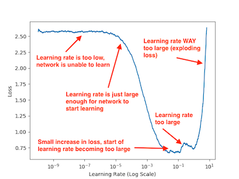

Welcome to the Lecture
Section III: Foundations for Modern Language Modeling
Focus:
Primary Objective: Understand key concepts for training modern LLMs
What is Pretraining?
Training an LLM from scratch on a large corpus (e.g., Common Crawl)
Objective: Predict next token in text
Output: A “base” model for later finetuning
Connects to decoder-only Transformers (Section II)
Pretraining: The Big Picture
- Process of training a model on vast amounts of text data
- Self-supervised learning: predict next token or masked tokens
- Goal: Develop general language understanding capabilities
- Resource-intensive: requires significant compute, data, engineering
- Many design choices affect training efficiency and model quality
Building on Previous Chapters
- Transformer Architecture: Foundation of modern LLMs
- Tokenization: Converting text to model-readable tokens
- Positional Encoding: Representing sequence information
- Here we examine: How to effectively train these models?
Core Architectural Choices
Key decisions when pretraining LLMs:
- Attention mechanisms
- Activation functions
- Normalization approaches
- Model sizing & dimensionality
Attention Mechanism Variants
Three main approaches:
- Multi-Head Attention (MHA): - Original Transformer design - Multiple attention heads, each with full query/key/value projections - Most expressive but computationally expensive
- Multi-Query Attention (MQA): - Shared key and value projections across heads - Queries remain separate - Reduces memory bandwidth requirements
- Grouped-Query Attention (GQA): - Middle ground between MHA and MQA - Keys and values shared among groups of heads - Better balance of efficiency and expressiveness
Key Decisions in Pretraining
- No one-size-fits-all “recipe”
- Choices impact performance, cost, speed
- Core areas:
- Model architecture (e.g., attention)
- Training setup (e.g., optimization)
- Data handling
Attention Variants: Trade-offs
| MHA |
Highest |
Highest |
Highest |
Early models, high-quality research |
| MQA |
Lowest |
Lowest |
Lowest |
Deployment-optimized models |
| GQA |
Medium |
Medium |
Medium |
Modern balanced models (Claude, PaLM) |
Attention Variants: MQA vs GQA vs MHA
Attention Variants Comparison
Activation Functions
Evolution of activation functions in LLMs:
- ReLU: Simple, efficient, but limited expressiveness
- GeLU: Smoother variant of ReLU, used in many models
- SwiGLU: Swish + GLU combination, better performance - Used in PaLM, LLaMA, and other recent models - Computationally more expensive but better results
- Impacts how neurons “fire” in Transformers
Plot of ReLU vs. GeLU

SwiGLU: The Modern Standard
SwiGLU computation:
\(\text{SwiGLU}(x) = \text{Swish}(xW) \otimes (xV)\)
Where:
- \[\text{Swish}(x) = x \cdot \text{sigmoid}(\beta x)\]
- \[\otimes \text{ denotes element-wise multiplication}\]
Benefits:
- Better gradient flow
- Improved representational capacity
- Modest compute overhead for significant quality gains
Normalization Techniques
- Layer Normalization: Standard in Transformers
- Normalizes across feature dimension
- Stabilizes training
- RMSNorm: Simplified version of LayerNorm
- Removes mean-centering step
- Slightly faster computation
- Used in LLaMA and other recent models
Optimization Strategies
Key components:
- Optimizer choice
- Learning rate scheduling
- Weight decay
- Gradient clipping
Optimizers for LLMs
- AdamW: Standard choice for most LLMs
- Adaptive learning rates with proper weight decay
- Robust to hyperparameter choices
- Adafactor: Memory-efficient alternative
- Factorizes second moment matrices
- Useful for memory-constrained settings
- Lion: Recent lightweight optimizer
- Momentum-based with sign updates
- Less memory usage, competitive performance
Learning Rate Scheduling
Typical LLM learning rate schedule:
- Warmup phase: Gradually increase from small value
- Prevents early instability
- Usually 1-3% of total training steps
- Decay phase: Gradual reduction of learning rate
- Cosine decay: Smooth reduction to minimum value
- Linear decay: Simpler alternative
Learning Rate Schedule

Effective Batch Sizing
- Global batch size: Total number of sequences processed before update
- Micro-batch size: Sequences processed on each device
- Gradient accumulation: Accumulate gradients over multiple micro-batches
Key considerations: - Larger batches → better gradient estimates but diminishing returns - Memory constraints often limit micro-batch size - Typical global batch sizes: 1-8 million tokens
Dropout Strategies
- Early LLMs: Significant dropout (0.1-0.2)
- Modern trend: Minimal or no dropout
- Chinchilla scaling laws: data > regularization
- Current practice: Use dropout only for small models or limited data
- When used, applied to:
- Attention outputs
- Feed-forward outputs
- Embedding layers
Training Duration and Data Reuse
- Epoch: One pass through the entire dataset
- Modern LLMs rarely see full epochs
- Tokens seen during training:
- GPT-3: 300B tokens
- PaLM: 780B tokens
- LLaMA 2: 2T tokens
- Claude/GPT-4: 10T+ tokens (estimated)
- Data mixing: Different sources with different sampling weights
- Data repetition: Strategic repeating of high-quality data
Scaling Laws and Compute-Optimal Training
- Chinchilla scaling laws (DeepMind, 2022):
- Model size and training data should scale together
- Optimal tokens ≈ 20x parameter count
- E.g., 70B model → 1.4T tokens for optimal training
- Compute-optimal training:
- Balance model size, data, and training time given fixed compute budget
Hyperparameter Selection
- Modern approach: Much less tuning than traditional ML
- Focus on proven defaults from literature
- Key hyperparameters to tune:
- Learning rate and schedule
- Weight decay
- Model width/depth ratio
- Global batch size
Engineering Considerations
- Mixed precision training: fp16/bf16 + fp32 optimizer states
- Gradient checkpointing: Trade computation for memory
- Model parallelism: Distribute model across devices
- Data parallelism: Process different batches on different devices
- Zero Redundancy Optimizer (ZeRO): Partition optimizer states
- FlashAttention: Efficient attention implementation
Industry Best Practices
Recent trends from leading labs:
- GQA + SwiGLU + RMSNorm architecture
- AdamW optimizer with cosine decay
- 2-4M token batch sizes
- Minimal dropout
- Compute-optimal training allocation
- Heavy use of data curation and filtering
Key Takeaways
- Many architectural and training choices affect LLM performance
- Modern defaults have emerged through industry experimentation
- Balancing compute efficiency and model quality is crucial
- Both architecture and optimization strategy matter significantly
- No single “best recipe” - depends on resources and goals